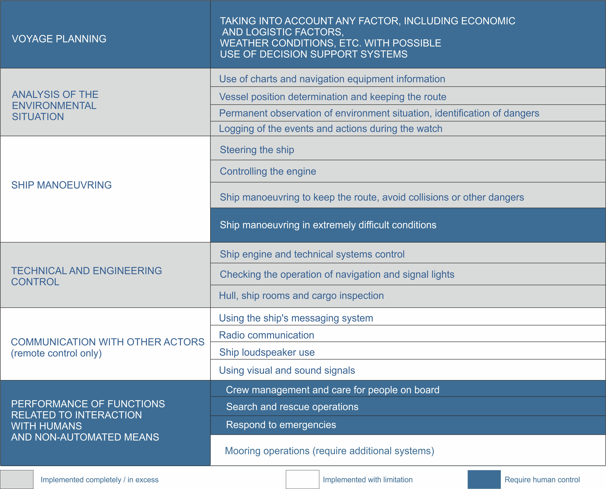

Technology
- Our 3-steps Roadmap
- Functional approach
- System architecture
- Autonomous Navigation System
- Optical Surveillance and Analysis System
- Coordinated Motion Control System
- Remote Engine and Technical Monitoring
- Remote Control Station
- Hardware and Conjunctions
- Communication and Cybersecurity
- Bridge Advisor
- Convoy navigation
- Legislation
Functional approach
Complete Functional Equivalence principle is the solution for the coexistence of MASS and traditional ships at the first stage. It supposes that in the autonomous mode we strictly fulfill the functions prescribed today for the crew on board by the current safety regulation.
CFE is the common denominator for MASS and traditional vessels. CFE presupposes that in autonomous mode we strictly fulfill only the functions prescribed for crew on board by current safety regulation, thereby acting as a common denominator for MASS and traditional vessels. This therefore guarantees that MASS, when interacting with other actors, will be guided by and perform well-known and mandatory for functions. This makes MASS operation predictable and understandable for everyone, removing fears of unpredictable AI systems. At the same time, it also allows for MASS operation to fit within the existing framework of international regulation as is, without requiring any immediate change pre-implementation.
In order to implement this principle, the project identified key functions provided for by SOLAS-74, the STCW Code, and COLREGs-72, as well as other regulations. We assessed the feasibility, limitations and expediency of automatic and remote control for each of these.
Much like the MUNIN project, we proceeded from the notion that for the most adequate control methods should be assessed on the basis of existing conditions and distinct tasks and then used. As a result, our proposed endeavor does not begin with the assumption of a totally unmanned vessel at the very outset.
For example, this includes the possibility of fully automatic or remote-controlled mode on the high seas with a crewmember on board able to take over in extremely difficult or emergency situations. Similarly, in emergency situations in which the officer in charge without a master must immediately notify the master in accordance with the STCW Code (Part A, Chapter VIII - Watchkeeping), which then must be carried out by the master or the pilot on board.
Guiding each of the automated functions is the implementation of a simple requirement; that is, to fulfill it strictly and in an amount no less than that currently provided by the crew on board.